El defensa del Valencia Joachim Bjorklund ha asegurado hoy , a la conclusión del entrenamiento , que prefiere que el Valencia continúe con su racha de victorias , aunque eso le cueste a él no jugar más de lo que le gustaría.
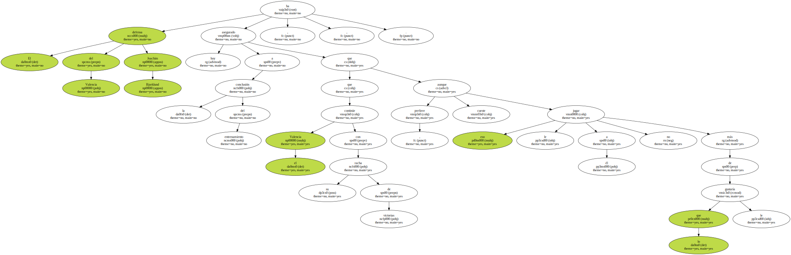" Si los que juegan lo hacen bien el técnico no tiene por qué cambiar . A mí no me fastidia , porque lo que yo quiero es que el equipo gane , aún a costa de no jugar " , afirmó.
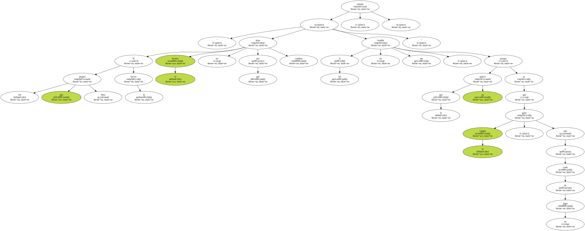El internacional sueco , que probablemente será titular el próximo domingo contra el Deportivo por la baja del sancionado Mauricio Pellegrino , afirmó que la defensa es uno de los pilares de este Valencia , que junto con la del Alavés es la más fuerte de toda la liga y que , en conjunto , ha contribuido al buen juego del equipo en los últimos partidos.
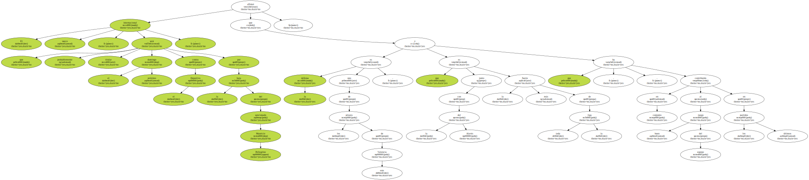Además , Bjorklund se mostró muy ilusionado por la posibilidad de volver al once en Riazor y aseguró que está preparado para afrontar el partido desde el inicio.
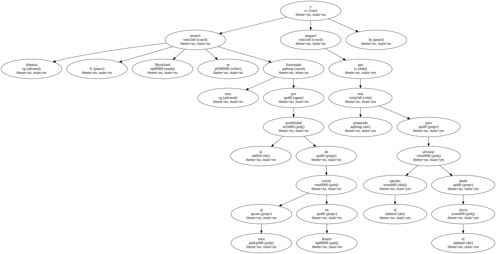" Espero volver , ya que está sancionado Mauricio y no hay muchos más centrales donde elegir . Me encuentro perfectamente y con el ritmo de competición necesario , ya que jugué cuarenta y cinco minutos contra el Athletic de Bilbao y todo el partido con Suecia ante Italia " , señaló.
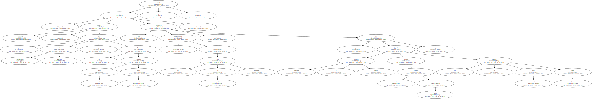En referencia al trascendental choque ante el equipo de Javier Irureta , el central sueco tiene claro que sólo les vale la victoria si quieren seguir con opciones al título de liga.
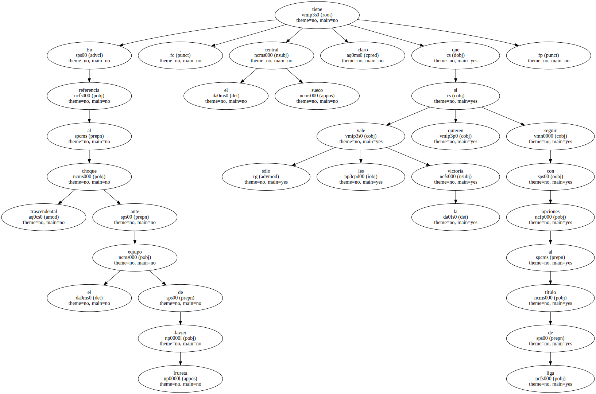" Si no ganamos , está claro que no podremos optar a la liga , mientras que si lo hacemos estaremos muy arriba y lucharemos por todo " , comentó Bjorklund.
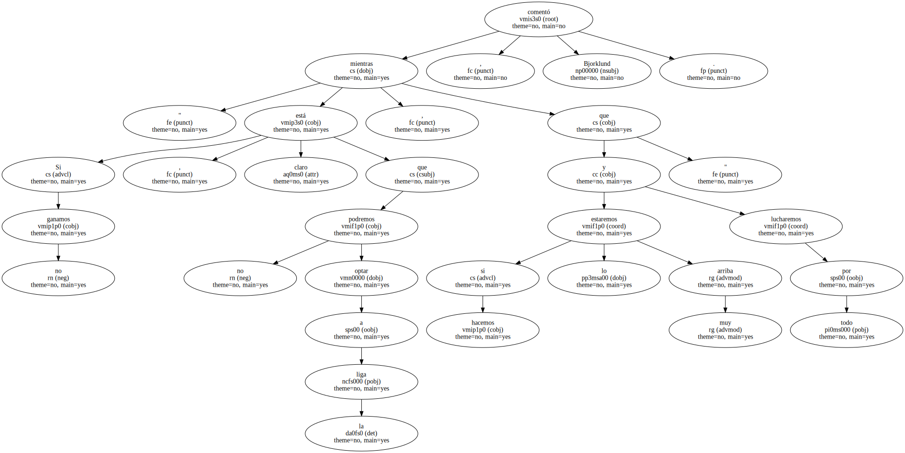" Aunque la presión puede jugar en contra del Deportivo , porque saben que si quieren ganar la liga deben ganar todos los partidos en casa , son un gran equipo que lleva cinco puntos de diferencia al segundo y será muy complicado ganar allí " , añadió el defensa.
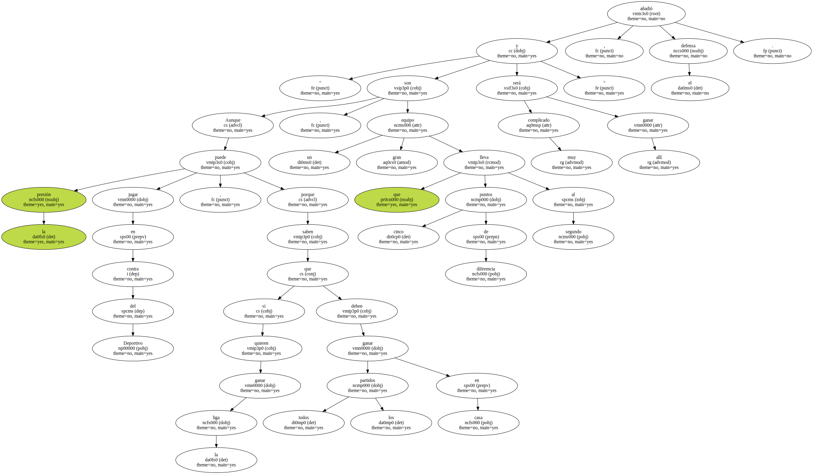Aún así , Joachim Bjorklund , quien destacó la importancia de las dos próximas jornadas de liga - ya que el Deportivo debe recibir al Valencia y viajar al Camp Nou - cree que el equipo gallego será incapaz de ganar estos dos partidos.

" Si ellos consiguieran sacar los seis puntos lo tendrían muy bien y sería muy difícil que perdieran el campeonato , pero estoy prácticamente convencido de que ni nos podrán ganar a nosotros , ni la semana que viene al Barcelona " , señaló.
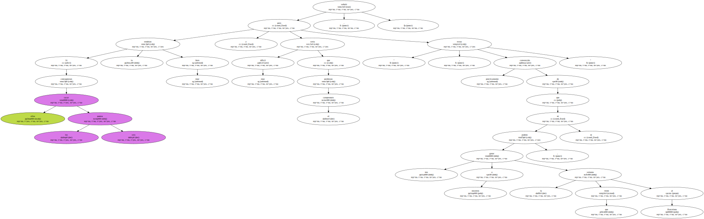Además , Bjorklund cree que el Valencia tiene mucha confianza por la racha que ha acumulado de seis partidos sin perder en liga y la importante victoria ante el Fiorentina del Martes.
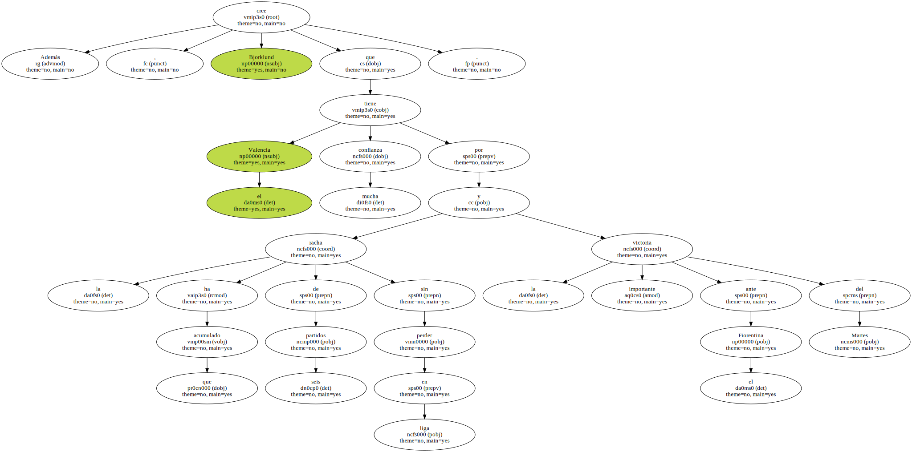" La confianza que tenemos tiene mucho que ver con el juego que hemos realizado últimamente y también nos da esperanzas el hecho de que el Deportivo hiciera un mal partido el pasado domingo ante el Malaga " , concluyó.
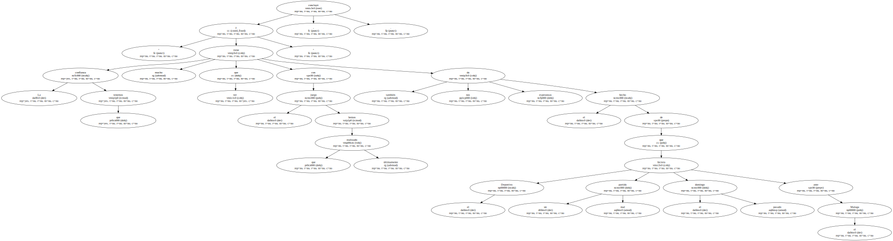